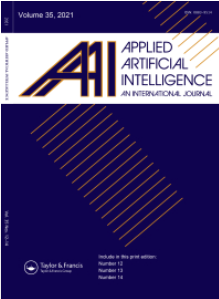

About EISA 2023
(This is a hybrid event with both physical and online presentation)
With recent evolution of adversarial techniques, intrusions have become more complex that may threaten the security of various assets regarding information and applications. In addition, coordinated intrusions like worm outbreak can continue to be a major threat to information, system and network security in the near future. The popularity of Internet may generate a large volume of different types of sensitive information. Therefore, there is a need for emerging techniques, theories and applications to protect information and practical security.
The 4th International Conference on Emerging Information Security and Applications (EISA) aims to provide a platform for researchers and practitioners across the world to exchange their ideas. It seeks original submissions that discuss practical or theoretical solutions to enhance the information and application security in practice.
A best paper award will be granted to the qualified papers.
Good quality papers will be invited to SCI-indexed journal special issues:
Applied Artificial Intelligence (https://www.tandfonline.com/journals/uaai20).

-------------------------------------
Topics of interest include, but are not limited to the ones listed below.
- Cyber intelligence techniques
- Multimedia security
- Blockchain and distributed ledger technology
- Malware and unwanted software
- Vulnerability analysis and reverse engineering
- Usable security and privacy
- Intrusion detection and prevention
- Authentication and access control
- Anonymity and privacy
- Cryptographic protection
- Digital forensics
- Cyber physical systems security
- Adversarial learning
- Security measurement
- Security management and policies
- Hardware and physical security
-------------------------------------
Important Dates:
First Round:
Submission Deadline: 15 July 2023 (passed)
Acceptance Notification: 30 August 2023
Camera Ready: 30 October 2023
Second Round:
Submission Deadline: 15 September 2023 (Extended!)
Acceptance Notification: 10 October 2023
Camera Ready: 30 October 2023
Conference dates: 06-07 December, 2023
-------------------------------------
For questions, please contact us at:
eisa2023@easychair.org.
Organized by:
Zhejiang Gongshang University, China
Technical University of Denmark, Denmark
SPTAGE Lab, DTU
NORCICS, Norway
News & Updates
08 August, 2023 EISA 2023 deadline has been extended to 30 August.
05 March, 2023 EISA 2023 website is online.
Keynote Speakers

Professor Shouling Ji
Affiliation: College of Computer Science and Technology, Zhejiang University
Title: Large Model Security and Its Security Impact
Abstract
With the rapid development of Large Language Models (LLM), the landscape of cybersecurity has experienced a paradigm shift. In this talk, we will first discuss the emerging security and privacy risks of large models. Then, we shift to discuss the impacts of large models on security with case studies.
Bio
Shouling Ji is a Qiushi Distinguished Professor in the College of Computer Science and Technology at Zhejiang University. He received a Ph.D. degree in Electrical and Computer Engineering from Georgia Institute of Technology, and a Ph.D. degree in Computer Science from Georgia State University. His current research interests include AI Security, Data-driven Security and Privacy, and Software and System Security. He is a member of ACM, IEEE, and CCF. He was a Research Intern at the IBM T. J. Watson Research Center. Shouling is the recipient of 10 Best Paper Awards, including ACM CCS 2021.
Dr. Shengzhi Zhang
Affiliation: Boston University Metropolitan College
Title: Watermarking Machine Learning Models
Abstract
Machine learning models are valuable IP of their owners due to the tremendous amount of expertise, effort, and computing power involved in designing, training, validating, and commercializing them. In this talk, we will first discuss challenges in designing watermarks given relevant adaptive attacks and then generalize the requirements for watermarks to survive those attacks. Finally, we will present some watermarking approaches in different scenarios.
Bio
Dr. Shengzhi Zhang is assistant professor in Computer Science department at Boston University Metropolitan College. Before joining BU, he worked as assistant professor at Florida Institute of Technology, and researcher in IBM research lab, Honeywell Aerospace, Cisco R&D. He got his Ph.D from the Department of Computer Science and Engineering at Penn State University in 2012. Dr. Zhang's research interest includes, but not limited to machine learning security, IoT security, system security, vehicle security, and mobile security. He has published many papers and served as program committee members in top tier security conferences and journals.
Call For Papers
The International Conference on Emerging Information Security and Applications (EISA) aims to provide a platform for researchers and practitioners across the world to exchange their ideas. It seeks original submissions that discuss practical or theoretical solutions to enhance the information and application security in practice.
-------------------------------------
Topics of interest include, but are not limited to the ones listed below.
- Cyber intelligence techniques
- Multimedia security
- Blockchain and distributed ledger technology
- Malware and unwanted software
- Vulnerability analysis and reverse engineering
- Usable security and privacy
- Intrusion detection and prevention
- Authentication and access control
- Anonymity and privacy
- Cryptographic protection
- Digital forensics
- Cyber physical systems security
- Adversarial learning
- Security measurement
- Security management and policies
- Hardware and physical security
Important Dates
| Submission Deadline | 15 July 2023 (First Round)/15 September 2023 (Second Round) |
| Acceptance Notification | 30 August 2023 (First Round)/10 October 2023 (Second Round) |
| Camera-ready Copy Due | 30 October 2023 |
| Conference | 06-07 December 2023 |
Author Instructions
Authors are invited to submit original papers. All papers need to be submitted electronically through the website (https://easychair.org/conferences/?conf=eisa2023) with PDF format. Submitted papers must not substantially overlap with papers that have been published or that are simultaneously submitted to a journal or a conference with proceedings. Papers must be clearly presented in English, must not exceed 18 pages (and up to 20 pages with well-marked references and appendix) in Springer LNCS/CCIS format (https://www.springer.com/gp/computer-science/lncs/conference-proceedings-guidelines), including tables, figures, references and appendices. Papers will be selected based on their originality, significance, relevance, and clarity of presentation assessed by at least three reviewers. Submission of a paper should be regarded as a commitment that, should the paper be accepted, at least one of the authors will register and attend the conference to present the work. A best paper award will be granted.
Submission link will be updated later
The proceeding of this year's conference will be published by Springer (under confirmation). Author instructions and LaTeX/Word templates for LNCS/CCIS publications can be found via the following link.
Springer LNCS/CCIS Author Information
Journal Special Issues
Selected papers from EISA 2023 will be invited to consider submission (after significant extension) for special issues:
To be announced
Organising Committee
General Chairs
Anthony TS Ho, University of Surrey, UK
Rongxing Lu, University of New Brunswick, Canada
Fagen Li, University of Electronic Science and Technology of China, China
Program Chairs
Jun Shao, Zhejiang Gongshang University, China
Sokratis K. Katsikas, Norwegian University of Science and Technology, Norway
Weizhi Meng, Technical University of Denmark, Denmark
Publicity Chairs
Yunguo Guan, University of New Brunswick, Canada
Cong Zuo, Beijing Institute of Technology, China
Long Meng, University of Surrey, UK
Publication Chair
Wei-Yang Chiu, Technical University of Denmark, Denmark
Program Committee
Cong Zuo, Beijing Institute of Technology, China
Wun-She Yap, Universiti Tunku Abdul Rahman, Malaysia
Shoichi Hirose, University of Fukui, Japan
Yicheng Zhang, University of California, Riverside, USA
Chingfang Hsu, Central China Normal University, China
Haiyang Xue, The Hong Kong Polytechnic University, Hong Kong SAR, China
Wenjuan Li, The Hong Kong Polytechnic University, Hong Kong SAR, China
Mingjun Wang, Xidian University, China
Albert Levi, Sabanci University, Turkey
Weizhi Meng, Technical University of Denmark, Denmark
Jun Shao, Zhejiang Gongshang University, China
Xiong Li, Hunan University of Science and Technology, China
Beibei Li, Sichuan University, China
Giovanni Livraga, University of Milan, Italy
Je Sen Teh, Universiti Sains Malaysia, Malaysia
Xingye Lu, The Hong Kong Polytechnic University, Hong Kong SAR, China
Zhe Xia, Wuhan University of Technology, China
Xue Yang, Tsinghua University, China
Gao Liu, Chongqing University, China
Qianhong Wu, Beihang University, China
Yunhe Feng, University of North Texas, USA
Xin Jin, The Ohio State University, USA
Reza Malekian, Malmo University, Sweden
Steven Furnell, University of Nottingham, UK
Lei Wu, Shandong Normal University, China
Mahmoud Nabil, North Carolina A&T University, USA
Ahmed Sherif, University of Southern Mississippi, USA
Chunhua Su, University of Aizu, Japan
Debiao He, Wuhan University, China
Stefanos Gritzalis, University of Piraeus, Greece
Jiangang Shu, Peng Cheng Laboratory, China
Sokratis Katsikas, Norwegian University of Science and Technology, Norway
Cheng Huang, University of Waterloo, Canada
Alessandro Brighente, University of Padova, Italy
Steering Committee
Jiageng Chen, Central China Normal University, China
Liqun Chen, University of Surrey, UK
Steven Furnell, University of Plymouth, UK
Anthony TS Ho, University of Surrey, UK
Sokratis K. Katsikas, Norwegian University of Science and Technology, Norway
Javier Lopez, University of Malaga, Spain
Weizhi Meng, Technical University of Denmark, Denmark
Accepted Papers
PtbStolen: Pre-trained Encoder Stealing Through Perturbed SamplesChuan Zhang, Haotian Liang, Zhuopeng Li, Tong Wu, Licheng Wang and Liehuang Zhu
Towards Efficient Universal Adversarial Attack on Audio Classification Models: A Two-step Method
Huifeng Li, Pengzhou Jia, Weixun Li, Bin Ma, Bo Li, Dexin Wu and Haoran Li
Privacy-Preserving Authenticated Federated Learning Scheme for Smart Healthcare System
Jun Tu and Gang Shen
A Systematic Method for Constructing ICT Supply Chain Security Requirements
Yinxing Wei, Jun Zheng and Hong Zhong
Pairing Compression on Some Elliptic Curves with Subgroups of Embedding Degree 6 and its Applications to Pairing-based Cryptography
Liang Li and Gengran Hu
Enhancing Chinese Named Entity Recognition with Disentangled Expert Knowledge
Hongkai Wang, Jun Feng, Yidan Wang, Sichen Pan, Shuai Zhao and Yi Xue
Deep Neural Network Model over Encrypted Data
Weixun Li, Guanghui Sun, Yajun Wang, Long Yuan, Minghui Gao, Yan Dong and Chen Wang
Privacy Protection Mechanism for Fair Federated Learning
Kangkang Sun, Xiaojin Zhang and Jianhua Li
Chinese Named Entity Recognition within the Electric Power Domain
Jun Feng, Hongkai Wang, Liangying Peng, Yidan Wang, Haomin Song and Hongju Guo
Adversarial Sampling Attacks and Defense in DNS Data Exfiltration
Izabela Savic, Haonan Yan, Xiaodong Lin and Daniel Gillis
CONNECTION: COvert chaNnel NEtwork attaCk Through bIt-rate mOdulatioN
Simone Soderi and Rocco De Nicola
Conference Schedule (Hybrid Conference)
Program (Beijing Time, GMT+8)
Day 1 （6 December 2023）
Arriving day
Day 2 （7 December 2023: 6 Floor, Siyuan Hall）
8.30-9:00
Welcome
General/Program Chairs
9:00-9:45
Keynote 1: Dr. Shengzhi Zhang (Boston University Metropolitan College, USA) （Session Chair: Weizhi Meng，DTU, Denmark）
Title：Watermarking Machine Learning Models
Machine learning models are valuable IP of their owners due to the tremendous amount of expertise, effort, and computing power involved in designing, training, validating, and commercializing them. In this talk, we will first discuss challenges in designing watermarks given relevant adaptive attacks and then generalize the requirements for watermarks to survive those attacks. Finally, we will present some watermarking approaches in different scenarios.
9:45-10:30
Keynote 2: Prof. Shouling Ji (Zhejiang University, China) （Session Chair: Weizhi Meng，DTU, Denmark）
Title: Large Model Security and Its Security Impact
With the rapid development of Large Language Models (LLM), the landscape of cybersecurity has experienced a paradigm shift. In this talk, we will first discuss the emerging security and privacy risks of large models. Then, we shift to discuss the impacts of large models on security with case studies.
10:30-10:50
Short Break
10:50-11:50
Session 1 （Session Chair: Haowen Tan, Zhejiang Sci-Tech University）
PtbStolen: Pre-trained Encoder Stealing Through Perturbed Samples
Chuan Zhang, Haotian Liang, Zhuopeng Li, Tong Wu, Licheng Wang and Liehuang Zhu
Adversarial Sampling Attacks and Defense in DNS Data Exfiltration
Izabela Savic, Haonan Yan, Xiaodong Lin and Daniel Gillis
Towards Efficient Universal Adversarial Attack on Audio Classification Models: A Two-step Method
Huifeng Li, Pengzhou Jia, Weixun Li, Bin Ma, Bo Li, Dexin Wu and Haoran Li
12:00-13:30
Lunch Break (6 Floor, Houde Hall)
13:30-14:30
Session 2 （Session Chair: Dong Wang, Hangzhou Dianzi University）
A Systematic Method for Constructing ICT Supply Chain Security Requirements
Yinxing Wei, Jun Zheng and Hong Zhong
Pairing Compression on Some Elliptic Curves with Subgroups of Embedding Degree 6 and its Applications to Pairing-based Cryptography
Liang Li and Gengran Hu
Enhancing Chinese Named Entity Recognition with Disentangled Expert Knowledge
Hongkai Wang, Jun Feng, Yidan Wang, Sichen Pan, Shuai Zhao and Yi Xue
14:30-14:50
Short break
14:50-15:50
Session 3（Session Chair: Chen Wang, Zhejiang Sci-Tech University）
Deep Neural Network Model over Encrypted Data
Weixun Li, Guanghui Sun, Yajun Wang, Long Yuan, Minghui Gao, Yan Dong and Chen Wang
Privacy Protection Mechanism for Fair Federated Learning
Kangkang Sun, Xiaojin Zhang and Jianhua Li
Chinese Named Entity Recognition within the Electric Power Domain
Jun Feng, Hongkai Wang, Liangying Peng, Yidan Wang, Haomin Song and Hongju Guo
15:50-16:10
Short break
16:10-17:10
Session 4（Session Chair: Tao Yang, Zhejiang Gongshang University）
Privacy-Preserving Authenticated Federated Learning Scheme for Smart Healthcare System
Jun Tu and Gang Shen
CONNECTION: COvert chaNnel NEtwork attaCk Through bIt-rate mOdulatioNb>
Simone Soderi and Rocco De Nicola
17:10-17:30
Closing Remarks and Awards
18:00-20:30
Banquet
Registration Information
Registration payment is required by 5 November 2023 for EACH accepted paper in the first & second round submission. This deadline will be strictly enforced. Failure to pay the registration fee will result in the exclusion of the papers from the Conference Proceedings.
Registration Fee
| Registration Type | Registration Fee |
|---|---|
| Author Registration (paper authors) | 3600 CNY (505 USD) |
| Participant Registration (non-paper authors) | 1200 CNY (170 USD) |
How to register
Mode of payment
Payment should be made by fund transfer or depositing registration fees in the Bank account provided below.
- For non-Chinese Residents:
- For Chinese Residents:
Account Name: JIA XIAO FENG
Account No: 6212261202041221079
Recipient Bank: INDUSTRIAL AND COMMERCIAL BANK OF CHINA, HANGZHOU CITY BRANCH
Bank address: 7-2 HUANSHA ROAD, HANGZHOU, ZHEJIANG, CHINA
SWIFT Code of the bank: ICBKCNBJHZU
Remark: EISA2023# Paper ID# Name
户名：杭州好景文化传播有限公司
开户银行：浙江泰隆商业银行杭州钱塘小微综合支行
账号：33020520201000002455
汇款备注信息:“EISA2023#论文编号#姓名”
If you have any question about the registration or need any assistance, please do not hesitate to contact us (Mr. Xiaofeng Jia) by xiaofengjia668@gmail.com.
Venue
EISA 2023 will be held at New Century Grand Hotel Hangzhou Shengtai (No. 297, No. 5 Street, Economic and Technological Development Zone, Xia Sha District, Hangzhou, China).
Location
Address: No. 297, No. 5 Street, Economic and Technological Development Zone, Xia Sha District, Hangzhou, China.
Information on Visa Applications
All participants of ISPEC2018 should be very careful about visa requirements and should make travel plan in advance enough. Visitors are fully responsible for acquiring all documents needed for entering Japan.
Japan provides waiver of visa requirements with more than 60 countries and regions. Please refer to the recent status on the visa waiver program from the Ministry of Foreign Affairs of Japan (MOFA).
If you need a visa for attendance, you should prepare all required documents according to the visa information page by MOFA. If you have any questions, please contact diplomatic establishments of Japan in your residential area.
We will issue an invitation letter ONLY for those who have presentation(s) at ISPEC2018 upon request. If you need an invitation letter for visa application, please send the following documents to
(ispec2018-visa *at* ml.cc.tsukuba.ac.jp)
(please replace *at* with @.)
after paying the registration fee via ISPEC2018 website and fixing your accommodation during the conference. (You can download a copy of participation information sheet and schedules of stay sheet from here.)
- Filled participation information sheet for invitation letter (MS-word and PDF format).
- Photo-copy of your passport (PDF format). (The page which your photo and passport number are included.)
- Photo-copy of student identification card (PDF format), if you are student. (The page(s) which your photo, name, and ID number are included.)
- Photo-copy of employee identification card (PDF format), if you are an employee. (The page(s) which your photo, name, and ID number are included.)
- Filled schedules of your stay sheet (MS-word or PDF format) with a proof of your stay (e.g., a confirmation e-mail, a receipt or an invoice from your accommodation).
We will respond with a detailed procedure for invitation letter request. Please make sure to make a registration for ISPEC2018 before the request.
Notices:
- Visa application to MOFA may take a long time. Please do it well before the deadline!
- We will normally respond to the first request in a few days.
- After receiving all required information, we will normally handle your requests in 1 or 2 weeks and the letter will be sent by a postal mail.
- We do not issue any form of "a letter of guarantee"
- We will issue invitation letters only for those who have presentation(s) at ISPEC2018.
- We hold rights to request any additional information and/or to decline your application for invitation letters.
- In case you need a document to be submitted to your organization prior to applying Visa, just let us know immediately.
- Registration cannot be cancelled once the Visa application related documents have been sent out to you.
About privacy:
According to the Act on the Protection of Personal Information Held by Independent Administrative Agencies and others of Japan, the information submitted to ISPEC2018 in this page will be kept secret and used only for processing the invitation letter requests. In some cases, ISPEC2018 will share those information with a part of organizing committee members concerned for resolving issues (e.g. checking registration status and paper acceptance etc.). We will not use any information received for other purposes, except those required by laws and rules of Japan.